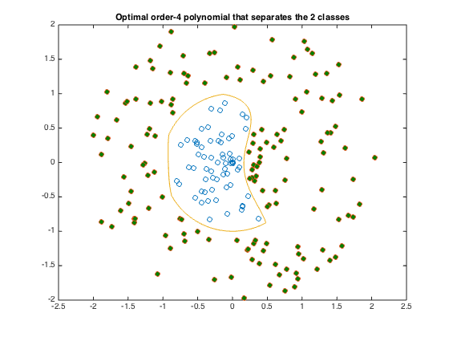

% Section 8.6.2, Boyd & Vandenberghe "Convex Optimization" % Original by Lieven Vandenberghe % Adapted for CVX by Joelle Skaf - 10/23/05 % (a figure is generated) % % The goal is to find the polynomial of degree 4 on R^n that separates % two sets of points {x_1,...,x_N} and {y_1,...,y_N}. We are trying to find % the coefficients of an order-4-polynomial P(x) that would satisfy: % minimize t % s.t. P(x_i) <= t for i = 1,...,N % P(y_i) >= t for i = 1,...,M % Data generation rand('state',0); N = 100; M = 120; % The points X lie within a circle of radius 0.9, with a wedge of points % near [1.1,0] removed. The points Y lie outside a circle of radius 1.1, % with a wedge of points near [1.1,0] added. The wedges are precisely what % makes the separation difficult and interesting. X = 2 * rand(2,N) - 1; X = X * diag(0.9*rand(1,N)./sqrt(sum(X.^2))); Y = 2 * rand(2,M) - 1; Y = Y * diag((1.1+rand(1,M))./sqrt(sum(Y.^2))); d = sqrt(sum((X-[1.1;0]*ones(1,N)).^2)); Y = [ Y, X(:,d<0.9) ]; X = X(:,d>1); N = size(X,2); M = size(Y,2); % Construct Vandermonde-style monomial matrices p1 = [0,0,1,0,1,2,0,1,2,3,0,1,2,3,4]'; p2 = [0,1,1,2,2,2,3,3,3,3,4,4,4,4,4]'-p1; np = length(p1); op = ones(np,1); monX = X(op,:) .^ p1(:,ones(1,N)) .* X(2*op,:) .^ p2(:,ones(1,N)); monY = Y(op,:) .^ p1(:,ones(1,M)) .* Y(2*op,:) .^ p2(:,ones(1,M)); % Solution via CVX fprintf(1,'Finding the optimal polynomial of order 4 that separates the 2 classes...'); cvx_begin variables a(np) t(1) minimize ( t ) a'*monX <= t; a'*monY >= -t; % For normalization purposes only norm(a) <= 1; cvx_end fprintf(1,'Done! \n'); % Displaying results nopts = 2000; angles = linspace(0,2*pi,nopts); cont = zeros(2,nopts); for i=1:nopts v = [cos(angles(i)); sin(angles(i))]; l = 0; u = 1; while ( u - l > 1e-3 ) s = (u+l)/2; x = s * v; if a' * ( x(op,:) .^ p1 .* x(2*op) .^ p2 ) > 0, u = s; else l = s; end end; s = (u+l)/2; cont(:,i) = s*v; end; graph = plot(X(1,:),X(2,:),'o', Y(1,:), Y(2,:),'o', cont(1,:), cont(2,:), '-'); set(graph(2),'MarkerFaceColor',[0 0.5 0]); title('Optimal order-4 polynomial that separates the 2 classes') % print -deps min-deg-discr.eps %%%% Dual infeasible ?????
Finding the optimal polynomial of order 4 that separates the 2 classes...
Calling SDPT3 4.0: 228 variables, 17 equality constraints
For improved efficiency, SDPT3 is solving the dual problem.
------------------------------------------------------------
num. of constraints = 17
dim. of socp var = 16, num. of socp blk = 1
dim. of linear var = 212
*******************************************************************
SDPT3: Infeasible path-following algorithms
*******************************************************************
version predcorr gam expon scale_data
NT 1 0.000 1 0
it pstep dstep pinfeas dinfeas gap prim-obj dual-obj cputime
-------------------------------------------------------------------
0|0.000|0.000|4.3e+03|3.8e+02|1.6e+05| 8.000000e+00 0.000000e+00| 0:0:00| chol 1 1
1|0.951|0.924|2.1e+02|2.9e+01|8.0e+03| 1.388934e+01 -4.886842e+01| 0:0:00| chol 1 1
2|0.984|1.000|3.2e+00|1.0e-02|1.8e+02| 9.251440e+00 -5.181875e+01| 0:0:00| chol 1 1
3|0.836|1.000|5.3e-01|1.0e-03|4.2e+01| 2.140248e+00 -2.861699e+01| 0:0:00| chol 1 1
4|1.000|0.910|4.6e-08|1.8e-04|1.1e+01| 1.939354e+00 -8.800620e+00| 0:0:00| chol 1 1
5|0.905|0.856|3.8e-08|3.5e-05|1.9e+00| 1.010301e+00 -9.103911e-01| 0:0:00| chol 1 1
6|1.000|0.370|1.3e-09|2.2e-05|1.5e+00| 6.677477e-01 -8.348393e-01| 0:0:00| chol 1 1
7|0.631|1.000|6.5e-10|1.0e-07|8.4e-01| 3.893785e-01 -4.476879e-01| 0:0:00| chol 1 1
8|0.781|0.785|1.8e-10|3.0e-08|5.4e-01| 3.209021e-01 -2.187887e-01| 0:0:00| chol 1 1
9|0.731|0.907|5.2e-11|3.7e-09|3.5e-01| 2.246688e-01 -1.265480e-01| 0:0:00| chol 1 1
10|0.912|1.000|4.6e-12|1.1e-10|1.6e-01| 1.604048e-01 4.282222e-03| 0:0:00| chol 1 1
11|1.000|1.000|2.9e-16|1.1e-11|6.4e-02| 9.043536e-02 2.691142e-02| 0:0:00| chol 1 1
12|0.595|0.993|7.4e-16|2.1e-12|3.8e-02| 6.994708e-02 3.242940e-02| 0:0:00| chol 1 1
13|0.971|1.000|4.6e-16|1.1e-12|1.4e-02| 5.223105e-02 3.827592e-02| 0:0:00| chol 1 1
14|1.000|0.979|2.3e-15|1.0e-12|6.8e-03| 4.712817e-02 4.032284e-02| 0:0:00| chol 1 1
15|0.928|0.999|8.6e-16|1.0e-12|1.4e-03| 4.226683e-02 4.088115e-02| 0:0:00| chol 1 1
16|1.000|1.000|8.8e-15|1.0e-12|5.8e-04| 4.153837e-02 4.096013e-02| 0:0:00| chol 1 1
17|0.961|0.986|8.3e-15|1.0e-12|3.2e-05| 4.102379e-02 4.099196e-02| 0:0:00| chol 1 1
18|0.984|1.000|3.1e-14|1.0e-12|2.4e-06| 4.099556e-02 4.099313e-02| 0:0:00| chol 1 1
19|1.000|1.000|4.6e-13|1.0e-12|1.6e-07| 4.099338e-02 4.099322e-02| 0:0:00| chol 1 1
20|1.000|1.000|1.5e-12|1.0e-12|5.1e-09| 4.099323e-02 4.099323e-02| 0:0:00|
stop: max(relative gap, infeasibilities) < 1.49e-08
-------------------------------------------------------------------
number of iterations = 20
primal objective value = 4.09932303e-02
dual objective value = 4.09932252e-02
gap := trace(XZ) = 5.11e-09
relative gap = 4.72e-09
actual relative gap = 4.72e-09
rel. primal infeas (scaled problem) = 1.52e-12
rel. dual " " " = 1.00e-12
rel. primal infeas (unscaled problem) = 0.00e+00
rel. dual " " " = 0.00e+00
norm(X), norm(y), norm(Z) = 5.6e-01, 1.0e+00, 2.1e+01
norm(A), norm(b), norm(C) = 1.0e+02, 2.0e+00, 2.0e+00
Total CPU time (secs) = 0.24
CPU time per iteration = 0.01
termination code = 0
DIMACS: 1.5e-12 0.0e+00 1.0e-12 0.0e+00 4.7e-09 4.7e-09
-------------------------------------------------------------------
------------------------------------------------------------
Status: Solved
Optimal value (cvx_optval): -0.0409932
Done!
